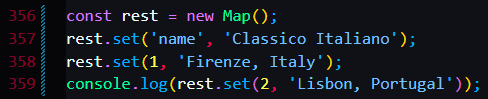

ES6


Use new Map() method to set up a new map
and use ${mapname}.set method to add stuff to it similar to the add method of sets.
and ${mapname}.set() function actually has a return value which is the updated map.
Map is like object except that they can have not only strings but also numbers booleans and other values as their keys


application of the boolean values as key.
since the answer of time > rest.get('open") && time < rest.get("close") is true
so the rest.get method will go to the key named "true" which is a boolean.
hence the We are open :D sign prompt in the console.


The has function returns a boolean, and is used to find out if a key exists in the map
the delete function pass in the name of the key as a parameter and remove the choosen key from the map
rest.clear can clear all the keys and its content
rest.size is counts the number of keys in the map


Keep in mind that this is not going to work, since arrays were stored in defferent places.


This is the correct way


You can even use a title as its keys.